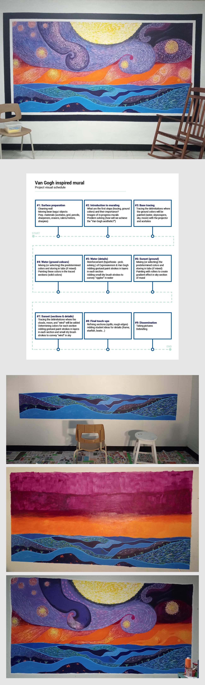
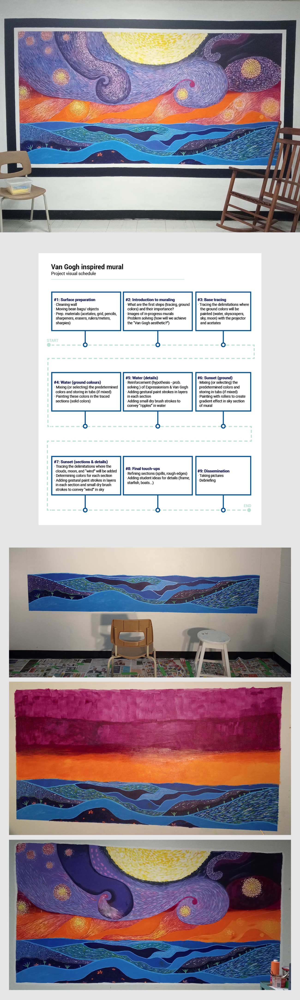
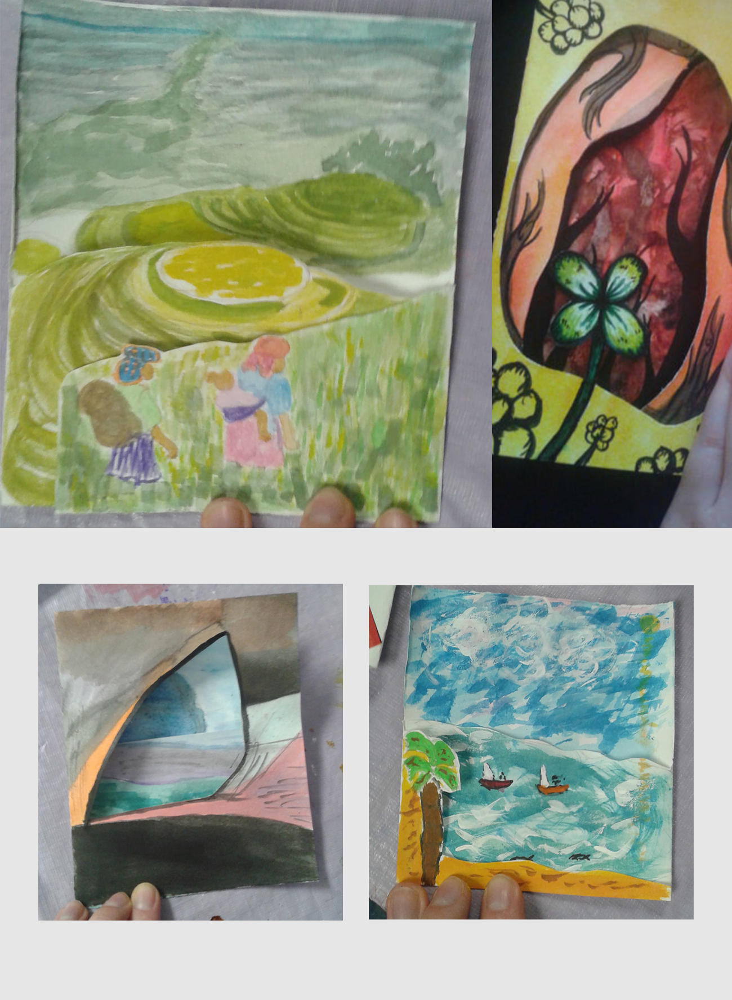
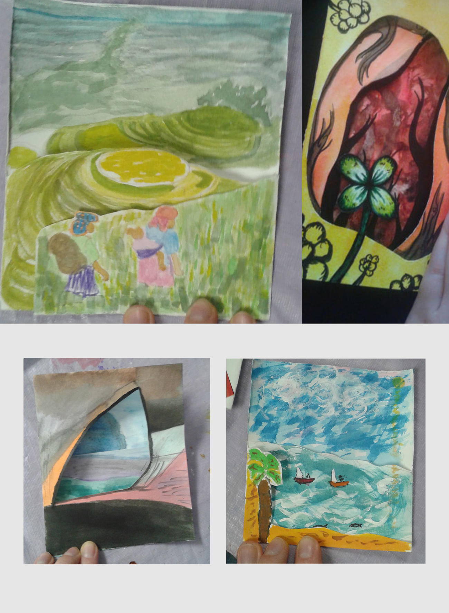

Van Gogh Mural
Activity
Students in the work oriented training path will be practicing their soft skills all whilst taking in consideration a client’s request (school principal) for a mural. They will receive daily tasks to complete. These will become less and less strict as the project goes on in order to help students develop effective work methods more independently.
Lessons Overview
Step 1: Introduction of impressionism and symbolism in art. Students explore the theme of a room in the school (the oasis, a room where they can relax or calm down during a crisis).
Step 2: Mixing of colors and tracing of the sketch on the wall with a projector. Preparation of the room (masking tape, tarps, and placing of tools and materials to be used) and distribution of student tasks.
Step 3: Painting of the background and delimitation of te areas to be painted.
Step 4: Painting gestural dry brush strokes to add texture in all the sections in Van Gogh's style.
Step 5: Adding details and embellishments, giving more freedom of creativity and choice to students (frame, starfish, seaweed...).
Step 6: Full clean-up of the room, final touch-ups, taking pictures, and official opening of the oasis.
 
